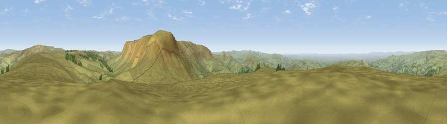

Mill Hill
#7842 in England · top 9% of its area beats it · near Little HayfieldThe view, rendered

A 360° render of this exact spot computed from the terrain model, tree cover and land cover — summer colours, afternoon light, calibrated against photographs of famous viewpoints. Real trees, hedges and buildings will differ in detail.
The panorama
Grey silhouette: terrain skyline in each direction (720 bearings, Earth curvature and refraction included). Dashed green: skyline with trees (+15 m) and buildings (+8 m) as obstacles. Blue strip: how far the ground is visible on each bearing.
Where the view opens
Wedge length = distance to the farthest visible ground on that bearing (vegetation-aware). Rings at 10, 25 and 50 km.
What fills the view
91% grassland · 6% woodland · 3% built-up
Angular shares of the visible panorama (visual magnitude), not map area. Landscape diversity 0.16 (0–1 Shannon).
Key numbers
More beautiful places nearby
The staircase of upgrades: each row has a higher view potential than everything closer. Driving times are estimates from straight-line distance, calibrated against real road routing — check an actual route before setting out.
| Place | Direction | Drive | Score |
|---|---|---|---|
| Viewpoint near Little Hayfield | SE · 1 km | ~3 min | 70.0 |
| Viewpoint near Upper Booth | SSE · 4 km | ~9 min | 70.2 |
| Viewpoint near Upper Booth | SSE · 4 km | ~9 min | 72.6 |
| Lord's Seat | SE · 9 km | ~17 min | 73.1 |
| Harrop Edge | NW · 10 km | ~19 min | 74.6 |
| Wild Bank | NW · 10 km | ~20 min | 76.2 |
| Viewpoint near Carrbrook | NW · 12 km | ~22 min | 77.1 |
| Viewpoint near Edenfield | NW · 37 km | ~56 min | 77.5 |
53.41060, -1.90932 · source: osm peak · position refined by local search. Computed location — check access rights before visiting.